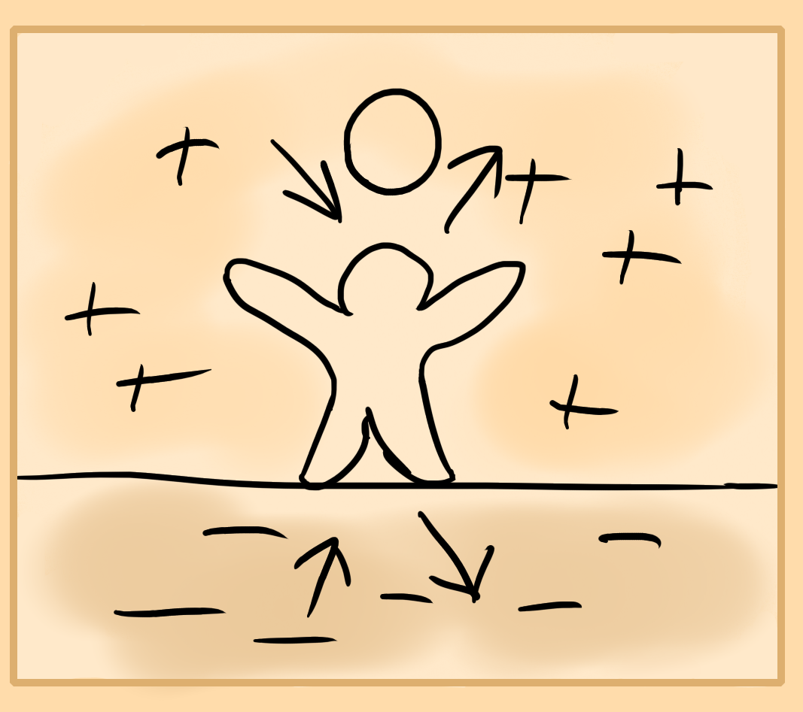

Yin Yang
A firm understanding of yin and yang is essential to understanding the true nature of energy.
Energy first exists in a pure state of void. It then splits off into two different elements or poles of positive which is yang and negative that's yin.
Yin is relaxed space, contraction, matter, cold, moisture, ice, relaxation, downwards. Yang is pressure and expansion, spiritual energy, heat, dryness, fire, activity and upward.
Both of these forces are found within the body and have their own corresponding organs and locations.
These two energies exist in a cycle as one changes into another and they play and dance around each other until you can't seem to notice which is either. Day and night cycles, moisture, evaporation, seasons and movements of the stars are all examples of these cycles.
You are in constant harmony between both forces. The earth below you is yin and the sky above is yang. There exists a constant energy transfer between both as you're weighing down upon the ground while it's also giving you a foundation to stand upon. Similarly the air around you is within a harmony of moisture and temperature as you breathe in and exhume these gasses from your lungs and whole body.
The same harmony exists internally as will be taught.
Energy Flow
Since the outer world is in a constant state of cycling or pulsing between positive and negative, then that is true of the internal world within your body.
During night time energy goes deep within the bones, nerves and organs while in the day it expresses out through your limbs, muscles and skin. So according to the cultivators disposition or what kind of exercises they are performing can relate to what location, position, time, diet eaten, etc is used. Though you don't need to focus too hard on this. I've painted a picture of duality so that you can understand the two sides of the whole which is what you want to achieve.
The Practice of Energy Cultivation
This is done through meditation usually. Specific postures, locations, drugs and meditations are used to achieve a certain result.
Various exercises like that of circulating focus within the body are performed, otherwise focus on centers that exist within a spiritual state is done. Even organs can be tonified (stimulated and improved) through this work. Bones and other parts of the body as well are focused on to heal or strengthen.
Standing practices too exist and are a gateway to externalizing your energy which is where qi gong and taiji exercises come in. This controls energy in an aura from around you.